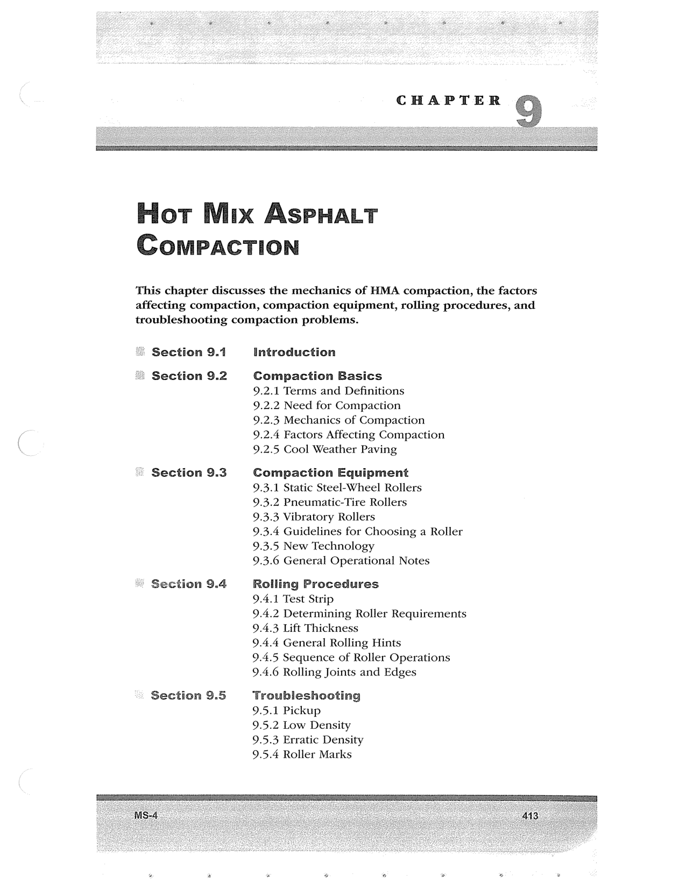

PDF page 447 · book page sequence 413


Searchable transcription
Unproofread OCR · 124 detected words; mean OCR confidence 93.32. Check technical values, symbols and table columns against the scan.
CHAPTER
Fior Mux ASPHALT CoMmMPACTION
This chapter discusses the mechanics of HMA compaction, the factors affecting compaction, compaction equipment, rolling procedures, and troubleshooting compaction problems.
Section 9.1
Section 9.2
© Section 9.3
© Section 9.4
“ Section 9.5
introduction
Compaction Basics
9.2.1 Terms and Definitions
9.2.2 Need for Compaction
9.2.3 Mechanics of Compaction 9.2.4 Factors Affecting Compaction 9.2.5 Cool Weather Paving
Compaction Equipment
9.3.1 Static Steel-Wheel Rollers
9.3.2 Pneumatic-Tire Rollers
9.3.3 Vibratory Rollers
9.3.4 Guidelines for Choosing a Roller 9.3.5 New Technology
9.3.6 General Operational Notes
Rolling Procedures
9.4.1 Test Strip
9.4.2 Determining Roller Requirements 9.4.3 Lift Thickness
9.4.4 General Rolling Hints
9.4.5 Sequence of Roller Operations 9.4.6 Rolling Joints and Edges
Troubleshooting 9.5.1 Pickup
9.5.2 Low Density 9.5.3 Erratic Density 9.5.4 Roller Marks